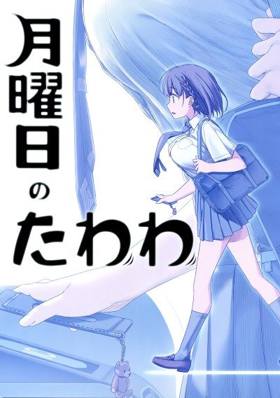

Tawawa on Monday
月曜日のたわわ
We haven't found where the anime ends in the manga yet.
6.1AniList score
—Animeter, no votes yet
24episodes, 2 seasons
2 seasons, 24 episodes
In airing order. Episode numbers on this site count straight through every season, so season 2 starts at episode 13.
1
2016 · Web
Tawawa on Monday
Episodes1–1212 ep
2
2021 · Web
Tawawa on Monday 2
Episodes13–2412 ep
Films, OVAs and specials
Not counted in the episode numbers above.
·
2016 · Special
Tawawa on Monday Specials
·
2021 · Special
Getsuyoubi no Tawawa 2 Special
Sources: AniList